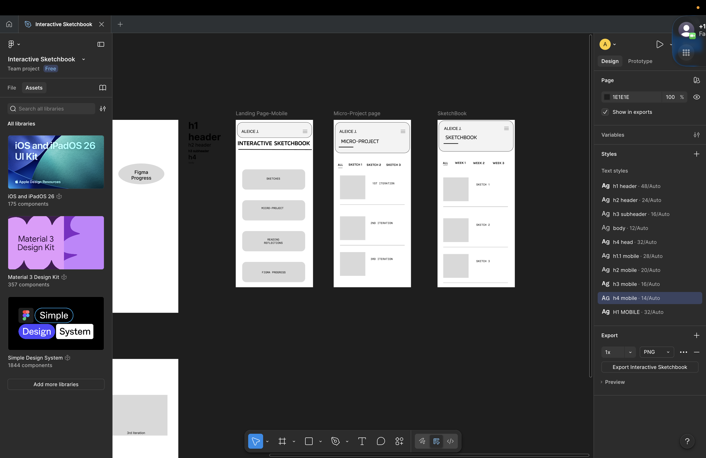

Week 2- Reflection
This week I continued to refine the structure of the site with the three more intentional mobile layouts. On the mobile landing page, I use stack buttons to organize the main sections like sketches, micro project, reading reflections, and Figma progress. This makes the navigation more direct within the micro project page and sketchbook. I also added a second level of navigation using labeled filters like: "all", "sketch one", "sketch two", or "week one", "week two". This helped me structure the content more clearly. I also established a stronger hierarchy through a different type system, H1 through H4, which helps organize information across screens compared to last week. I moved away from a more desktop-based layout, also a layout that was not as visually as compelling this week. The structure is more linear and organized where each project page is sorted out with iterations or sketch runs in order instead of just placed in a grid. This addresses the problems from my audit like unclear navigation, hierarchy and inconsistent structure across pages. Now the site feels more organized and easier to understand. There's more consistency between different sections. What still feels unresolved is how the hamburger menu function and what it will contain as most of what should be contained is already placed on the page. Also all the sections on the landing page feel equally important so there is a chance that I could push hierarchy more.
https://www.figma.com/design/8IZWsLUZzm1JwqsXdeCWA1/Interactive-Sketchbook?node-id=0-1&p=f&t=22LHDDut8KUshYTT-0
